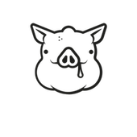

The Iberian pig is a traditional breed of the domestic pig (Sus scrofa domesticus) that is native to the Iberian Peninsula. The Iberian pig, whose origins can probably be traced back to the Neolithic, when animal domestication started, is currently found in herds clustered in the central and southern part of Portugal and Spain.
SaucissonSummer sausage is any sausage that can be kept without refrigeration. Summer sausage is usually a mixture of pork and other meat such as beef or venison. Summer sausage can be dried or smoked, and while curing ingredients vary significantly, curing salt is almost always used. |
|
|  |
RillettesRillettes are a preparation of meat similar to pâté. Commonly made from pork, the meat is cubed or chopped, salted heavily and cooked slowly in fat until it is tender enough to be easily shredded, and then cooled with enough of the fat to form a paste. |
Jamón ibéricoJamón ibérico lit. "Iberian ham", is a type of cured ham produced in Spain and Portugal. According to Spain's Denominación de Origen rules on food products, jamón ibérico may be made from black Iberian pigs. |